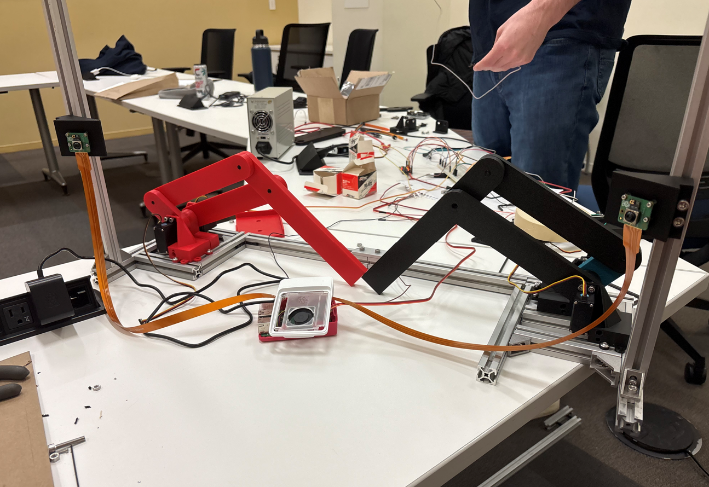

A robot that plays ping pong
My team built a robotic arm capable of playing ping pong against a live opponent in real time. We submitted our concept to the UW-Madison Borgen Design Competition, where we won funding to pursue the full build.
Borgen Design Competition — Selected for funding after pitching to the UW-Madison engineering review panel.

The system combines real-time ball tracking, 3D position mapping, inverse kinematics, and servo-driven arms — all synchronized to respond to a ball in flight.
Detecting the ball in real time
The first milestone was reliable ball detection. Using a Raspberry Pi, Pi Camera, and OpenCV, we built a color-based tracking pipeline that runs continuously to extract ball position.
HSV masking
Convert the camera feed to HSV color space and isolate the ball's hue range, producing a binary mask.
Contour detection
Fit a contour around the mask and extract the centroid to get a precise 2D position each frame.
Zone-based servo control
Divide the frame into left, center, and right zones. Dispatch the matching PWM signal to the servo.


Proof of concept: A small servo coupled to the tracking script follows the ball left and right in real time with no perceptible lag.
A 2D scaled-down testbed
Before tackling the full 3D problem, we built a pinball-inspired platform — a flat surface with two servo-driven bumpers and a top-mounted camera looking straight down.
This gave us a controlled environment to validate tracking and actuation logic, and served as our formal capstone progress report demo.
Extending into three dimensions
The full system requires knowing where the ball is in 3D space. We deployed two cameras in a stereo configuration and wrote an algorithm that converts pixel coordinates from each feed into a single 3D world position.

With position data in hand, we built two robotic arms from servo motors and 3D-printed linkages. Each arm has two degrees of freedom. An inverse kinematics script translates world coordinates into joint angles, and the arms track the ball in real time.
Next: A trajectory prediction module using parabolic motion modeling to anticipate ball position rather than just react to it.

Technologies
Hardware, vision, and control systems working together.
See the project
Explore the live demo or browse the source code.